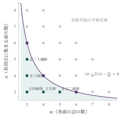

STEP III 1999、第4問
先に進む前に問題を読んでおこう。問題は STEP Support Programme の問題データベースにある： step.maths.org/questions/99-s3-q4
導入
正多角形（regular polygon）は無限に多く存在する。正三角形、正方形、正五角形と、辺の数がいくつであっても正多角形がある。それならば正多面体（regular polyhedron）も無限に多くあると思うかもしれない。しかし実際にはちょうど5つしかない。正四面体（tetrahedron）、立方体（cube）、正八面体（octahedron）、正十二面体（dodecahedron）、正二十面体（icosahedron）である。プラトン（Plato）はこのうち4つを四元素（火、土、空気、水）に、残る1つを宇宙に対応させた。史上最も大きな影響を与えた数学書であるユークリッド（Euclid）の『原論』（Elements）は、これ以外に正多面体が存在しないことの証明で締めくくられている。ケプラー（Kepler）はこれらを用いて太陽系の模型を作った。
この問題では、オイラー（Euler）が1750年に発見した一つの驚くべき公式、すなわち任意の凸多面体（convex polyhedron）について \(V - E + F = 2\) が成り立つという公式から、この分類をわずか数行で証明する。数え上げに関する公式が図形に関する定理に姿を変え、数 \(2\) が球面の「指紋」であることが明らかになる。
取りかかる前に
立方体でオイラーの公式を確かめよ。頂点（vertex）、辺（edge）、面（face）はそれぞれいくつあるか。正方形を底面とする角錐ではどうか。
立方体では \(V = 8\)、\(E = 12\)、\(F = 6\) であり、\(8 - 12 + 6 = 2\) となる。正方形を底面とする角錐は頂点が \(5\) 個、辺が \(8\) 本、面が \(5\) 枚であり、\(5 - 8 + 5 = 2\) となる。この公式は、穴のない多面体であれば、どれほど不規則な形であっても成り立つ。
正多面体では、各面は \(m\) 本の辺をもち、各辺はちょうど2枚の面に接する。このことから \(E\) と \(F\) の間にどのような等式が得られるか。同様に、\(E\) と \(V\) の間にはどうか。
辺と面の接続（incidence）を2通りに数える。\(F\) 枚の面はそれぞれ \(m\) 本の辺をもち、各辺は（それが接する2枚の面それぞれについて1回ずつ）2回数えられるので、\(mF = 2E\) である。同様に、各頂点には \(n\) 本の辺が集まり、各辺には端点が2つあるので、\(nV = 2E\) である。この「同じものを2通りに数える」手法を二重数え上げ（double counting）という。
順を追って解く
段階 1 \(F\) を表す式
\(mF = 2E\) と \(nV = 2E\) から、\(E = \frac{mF}{2}\)、\(V = \frac{mF}{n}\) である。これらをオイラーの公式に代入すると、 \[\frac{mF}{n} - \frac{mF}{2} + F = 2 \quad\Longrightarrow\quad F\,\frac{2m - mn + 2n}{2n} = 2 \quad\Longrightarrow\quad F = \frac{4n}{2m + 2n - mn}.\] また \(4 - (n - 2)(m - 2) = 4 - (mn - 2m - 2n + 4) = 2m + 2n - mn = h\) である。よって \(F = \frac{4n}{h}\) である。■
段階 2 \(m\) と \(n\) はどのような値をとりうるか
\(m\)（面の辺の数）と \(n\)（頂点に集まる面の数）の最小値はそれぞれいくつか。また \(F > 0\) であることから、\(h\) の符号はどうでなければならないか。
多角形には少なくとも \(3\) 本の辺が必要なので \(m \geq 3\) であり、立体の各頂点には少なくとも \(3\) 枚の面が集まらなければならないので \(n \geq 3\) である。\(F > 0\) であるから \(h > 0\)、すなわち \((n - 2)(m - 2) < 4\) が必要である。2つの因数はともに \(1\) 以上なので、\((m - 2, n - 2)\) としてありうるのは \((1, 1)\)、\((1, 2)\)、\((2, 1)\)、\((1, 3)\)、\((3, 1)\) のみである。
5つの場合それぞれについて、\(h\)、\(F\)、さらに \(E = \frac{mF}{2}\) と \(V = \frac{mF}{n}\) を計算せよ。それぞれどの立体であるかを特定せよ。
| \(m\) | \(n\) | \(h\) | \(F\) | \(E\) | \(V\) | 立体 |
|---|---|---|---|---|---|---|
| \(3\) | \(3\) | \(3\) | \(4\) | \(6\) | \(4\) | 正四面体 |
| \(3\) | \(4\) | \(2\) | \(8\) | \(12\) | \(6\) | 正八面体 |
| \(4\) | \(3\) | \(2\) | \(6\) | \(12\) | \(8\) | 立方体 |
| \(3\) | \(5\) | \(1\) | \(20\) | \(30\) | \(12\) | 正二十面体 |
| \(5\) | \(3\) | \(1\) | \(12\) | \(30\) | \(20\) | 正十二面体 |
ありうるのはこれらだけなので、正多面体は高々5種類である。そして5種類すべてが実際に存在する（ユークリッドはそれぞれの作図法を示している）。■
振り返り
二重数え上げ。辺と面、辺と頂点の接続を2通りに数えることで、\(mF = 2E\) と \(nV = 2E\) が得られた。
正値性から得られる不等式。\(F > 0\) という単純な条件によって、無限にあった候補が5つにまで絞られた。
存在は別問題である。この議論で示されるのは高々5種類であるということであり、それぞれが実際に存在することは、作図によって確かめなければならない。
背後にある数学
オイラーは1750年に \(V - E + F = 2\) を述べたが、その証明には不備があった。この公式には、証明の試み、反例（counterexample）、そしてその修正が繰り返された興味深い歴史がある。中央に正方形の穴が貫通した「額縁」型の多面体では \(V - E + F = 0\) となり、2つの立方体を1つの頂点で接合した多面体では \(V - E + F = 3\) となる。ラカトシュ・イムレ（Imre Lakatos）はこの歴史を題材に、数学の概念が反例によってどのように研ぎ澄まされていくかを論じた有名な書物 Proofs and Refutations（『証明と論駁』）を著した。最終的な解決は、\(V - E + F\) が位相幾何学（topology）というゆるやかな意味での曲面の形にのみ依存する、というものである。すなわち、球面に変形できる任意の曲面ではこの値は \(2\) であり、トーラス（torus、ドーナツの表面）では \(0\)、\(g\) 個の穴をもつ曲面では \(2 - 2g\) である。この数はオイラー標数（Euler characteristic）と呼ばれ、伸ばしたり曲げたりしても変わらない性質を研究する位相幾何学の、最初期の概念の一つであった。

球面の先へ
\(h = 0\) や \(h < 0\) のときはどうなるだろうか。\((m - 2)(n - 2) = 4\) のときは \((3, 6)\)、\((4, 4)\)、\((6, 3)\) の3つの解がある。すなわち、6枚の正三角形、4枚の正方形、あるいは3枚の正六角形が1点に集まり、その角の和がちょうど \(360^\circ\) になる。これらは平坦な平面の3つの正則な平面充填（tiling）であり、浴室の床のタイルや蜂の巣に見られる模様である。そして \((m - 2)(n - 2) > 4\) のときは、1つの頂点に集まる角の和が \(360^\circ\) を超える。これは平坦な平面では不可能だが、第 5.8 節 で扱った双曲平面（hyperbolic plane）ではまったく問題なく実現できる。双曲平面の正則な平面充填は無限に多く存在し、図 7.9.1 の曲線より上側の各点に1つずつ対応する。エッシャー（Escher）の木版画 Circle Limit（『円の極限』）連作は、そのうちのいくつかを描いたものである。このように、プラトン立体の分類は、実は幾何学全体を貫く三分法（trichotomy）——球面、平面、双曲平面——の最初の場合なのである。
対称性の群
プラトン立体の対称性は群（group）をなす。正四面体では \(12\) 個の回転、立方体と正八面体では \(24\) 個の回転（この2つは双対（dual）である。つまり面と頂点を入れ替える、\(m \leftrightarrow n\)）、正十二面体と正二十面体では \(60\) 個の回転である。位数 \(60\) の正二十面体群は、第 6.4 節 で触れたように、五次方程式（quintic）が冪根（radicals）によって解けないことの原因となる「単純」群（simple group）である。フェリックス・クライン（Felix Klein）は、正二十面体と五次方程式の解法とを結びつける一冊の本 Lectures on the Icosahedron（『正二十面体講義』、1884年）を著している。
思考のスキル
同じ集まりを2通りの方法で数え、その結果を等しいとおく。
ここでの集まりは、辺がその面上にあるような（辺, 面）の組全体の集合であった。二重数え上げは組合せ論（combinatorics）における最も強力な道具の一つであり、第 9 章の随所で再び登場する。
次の一歩
双対性。\(m\) と \(n\) を入れ替えると、\(V\) と \(F\) が入れ替わり、\(E\) は変わらないことを示せ。どのプラトン立体どうしが互いに双対か。自己双対なのはどれか。
サッカーボール。伝統的なサッカーボールは \(12\) 枚の正五角形と \(20\) 枚の正六角形からなり、各頂点には3枚の面が集まる。二重数え上げとオイラーの公式を用いて、\(V - E + F = 2\) を確かめよ。さらに一般に、五角形と六角形からなり各頂点に3枚ずつ集まるこのような多面体は、ちょうど \(12\) 枚の五角形をもつことを示せ。
トーラス。「額縁」型の多面体（正方形の穴があいた四角いブロック）を作り、\(V\)、\(E\)、\(F\) を数えよ。\(V - E + F = 0\) となることを確かめよ。
頂点に集まる角。正 \(m\) 角形の内角は \(180^\circ(1 - \frac2m)\) である。凸な立体の1つの頂点のまわりにそれが \(n\) 個収まる（和が \(360^\circ\) 未満となる）のは、\((m - 2)(n - 2) < 4\) のとき、かつそのときに限ることを示せ。これにより分類の第二の証明が得られる。
さらに学ぶために
David Richeson, Euler’s Gem（Princeton University Press）。\(V - E + F = 2\) の歴史と、それがどのように位相幾何学へとつながったかを描く。シックスフォーム（sixth form、英国の大学進学準備課程）の生徒にとって最適な一冊である。
Imre Lakatos, Proofs and Refutations（Cambridge University Press）。オイラーの公式と証明の本質をめぐる対話篇。
H. S. M. Coxeter, Regular Polytopes（Dover）。正多面体とその高次元の仲間についての古典的名著。